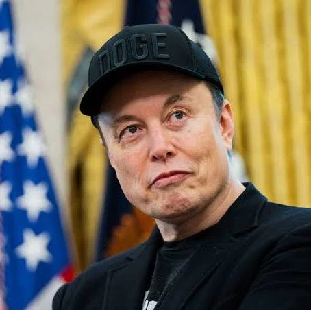

W 1995 roku Musk przeprowadził się do Kalifornii z zamiarem rozpoczęcia studiów doktoranckich na Uniwersytecie Stanforda, jednak zrezygnował z nich już po dwóch dniach, aby dołączyć do internetowego boomu. Wraz ze swoim bratem Kimbalem założył firmę Zip2. Był to internetowy przewodnik po miastach dostarczający treść dla gazet takich jak The New York Times. W 1999 roku przedsiębiorstwo Compaq kupiło Zip2 za 307 milionów dolarów, z czego Musk otrzymał 22 miliony.
Otrzymane środki Musk zainwestował w kolejny projekt – X.com, czyli jeden z pierwszych banków internetowych. Firma ta połączyła się z przedsiębiorstwem Confinity, tworząc znany na całym świecie system płatności PayPal. Mimo wewnętrznych konfliktów zarządczych, które doprowadziły do odwołania Muska z funkcji CEO, firma prężnie się rozwijała. W 2002 roku serwis eBay zakupił PayPal za 1,5 miliarda dolarów w akcjach. Elon Musk jako największy akcjonariusz zarobił na tej transakcji ponad 180 milionów dolarów.
